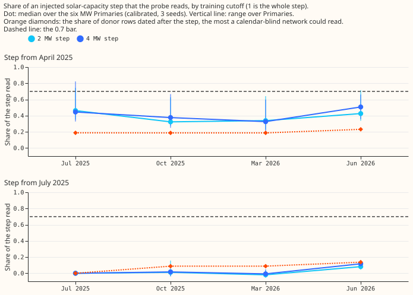
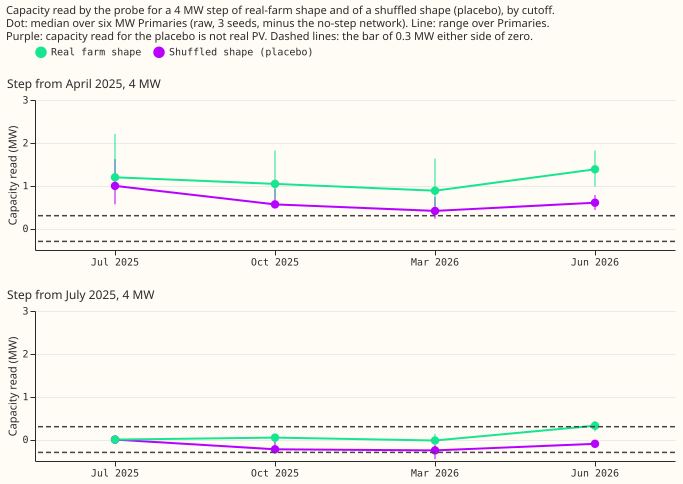
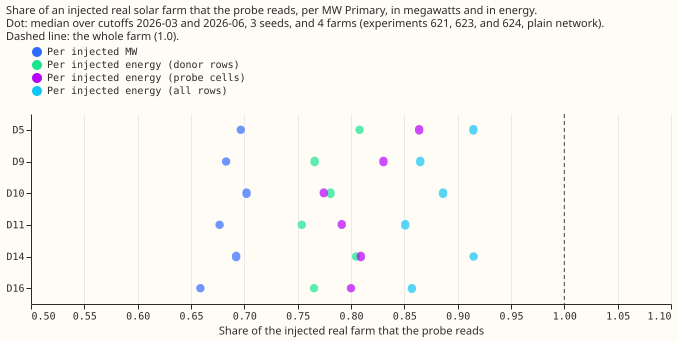

A step in solar capacity, and recovery in energy, for the donor-day PV probe
We asked whether a probe of a neural network can follow a step in solar capacity, and whether the probe's 0.68 recovery of an injected real solar farm is mostly an effect of the units. The probe takes a neural network that is given no past power readings as input (a lag-free network, from experiments 554 and 621) and measures how much its demand forecast falls when the sky clears. We added the half-hourly output of a real solar farm, scaled to 2 MW or 4 MW, to the demand that the network was trained to predict at six MW Primary substations. We then checked how much of that added capacity the probe found again, which we call the recovery (probed capacity divided by injected capacity, in megawatts or in megawatt-hours). In energy the probe recovers 0.78 to 0.88 of a real farm, against 0.68 in megawatts, so part of the shortfall comes from measuring in megawatts. A step is an addition that starts on 1 April 2025 or on 1 July 2025 and continues to the end of the training data. The probe found a step starting in April at 0.32 to 0.51 of its size, found a placebo step with a shuffled shape at about half of that, and found a step starting in July at 0.0 to 0.1. The probe's estimate tracks the weather of the step's months as well as the step. Verdict: not supported.

Definitions
- Recovery: the probed capacity of a network trained with the injection, minus that of the network trained without it (same cutoff, seed, and Primary), divided by the injected capacity.
- Donor rows: for each probe date and half-hour, the training rows within 21 days of the same day of the year at the same half-hour. The probe regresses the network's forecast on the PV output that the clear-sky irradiance of the donor rows implies.
- Cutoff: the last date of the training data of one set of networks. The four cutoffs are 2025-07, 2025-10, 2026-03, and 2026-06.
- Calibrated: the recovery divided by the leave-one-farm-out factor, which is the median recovery of the constant-injection networks of the same cutoff whose injected farm differs from the farm injected at that Primary.
- Plain network and monotone network: experiment 554's unconstrained network, and experiment 623's variant constrained so that net demand cannot rise with shortwave irradiance. Part 2 uses the plain network only.
- Placebo step: a step of the same size and calendar whose shape is the farm's monthly mean output with the within-month anomaly shuffled. The page's results show it keeps some sky link.
- Energy ratio: the sum of the farm's output over the sum of the physics unit PV curve, on one set of rows. Part 1 uses three sets: the probe cells, the donor rows, and all daylight rows.
- Spread across Primaries (or farms): the standard deviation of the per-Primary (or per-farm) median recoveries divided by their mean.
- Step bar: for each of the four steps (spring or summer, 2 MW or 4 MW), the median calibrated recovery over seeds is at least 0.7 at 4 of the 6 Primaries at 2025-10.
Results
All four step bars fail, the placebo bar fails, and the noise-floor bar and the coverage bar of the constant injection pass.
| Bar (fixed before any step-world recovery was read) | Result |
|---|---|
| Calibrated step at 2025-10 at least 0.70 at 4 of 6 Primaries, each of the four steps | Fail for all four: spring 0.32 (2 MW) and 0.38 (4 MW); summer 0.01 and 0.02 |
| Shuffled-shape step under 0.3 MW at every cutoff | Fail for the spring placebo (95th percentile over seeds up to 2.06 MW at one Primary; the median Primary's 95th percentile 0.55 to 1.33 MW) and for the summer placebo at 2025-10 (median 0.23, maximum 0.39 MW) and 2026-03 (median 0.33, maximum 0.64 MW) |
| Seed noise floor, 95th percentile under 0.3 MW | Pass: 0.244 MW over 72 differences (median 0.094 MW) |
| Widened interval covers the constant-injection truth in at least 60% | Pass: 0.66 (0.64 to 0.69 by cutoff) |
| Same interval covers the full step / the calendar-blind share | 0.01 / 0.25 |
| Lag to 0.7 within 9 months | Stop rule fired: no cutoff reaches 0.7, so only season-year values are reportable |
| Energy-based recovery of a 4 MW real farm in 0.80 to 1.00 (median over Primaries) | Mixed: 0.78 on donor rows (fail), 0.80 on probe cells and 0.88 on all rows (pass) |
| Energy-based spread across Primaries narrower than the megawatt spread | Fail: see "Energy-based recovery" |
- The spring step is read at far more than its share of training rows. Only 19% of the donor rows (23% at 2026-06) are dated after 1 April 2025, but the calibrated recovery is 0.32 to 0.51. The summer step is read below its share at 2025-10 and 2026-03 (0.09 of donor rows against 0.01 to 0.02 and -0.02 to -0.01 read) and near it at 2026-06 (0.14 against 0.08 to 0.12).
- The recovery of the spring step does not grow steadily with time. The 4 MW step is recovered at 0.45, 0.38, 0.33, and 0.51 at the four cutoffs. The fall from 2025-07 to 2025-10 holds at all six Primaries (mean 0.08). The audit traced it to the donor mix: the ordinary July to September 2025 donors dilute the sunny April to June 2025 ones.
- The constant injection calibrates to 1. The leave-one-farm-out factor is 0.671, 0.689, 0.680, and 0.685 at the four cutoffs, and the calibrated constant injection is recovered at 0.95 to 1.04 at every Primary and cutoff.
- The summer-step networks at 2025-07 read zero to within 6.5e-7 MW, because they train on rows identical to the control's. This is a determinism check and the only pre-step check of a real-farm step that this experiment runs, because the spring step starts before the earliest cutoff.
- Primary D9 is the highest. The 4 MW spring step reaches 0.82 at 2025-07 at D9 and 0.60 to 0.67 at the other cutoffs; the other five Primaries stay below 0.55.

Why a placebo step is read as capacity
A step whose donor rows fall mostly in a sunny period is learned as a response to sunshine. The clearness (the ratio of measured to clear-sky shortwave irradiance) over the six MW Primaries was 0.76 in April to June 2025. It was 0.61 in April to June 2024 and 0.65 to 0.69 in 2020 to 2023, and 0.61 in July to September of both 2024 and 2025. A demand step that exists only in the sunny months is correlated with sky clearness in the training rows, and the probe reads that correlation. In the audit's regressions of the injected megawatts on the unit PV curve over the probe's own cells, sky clearness explains the summer step completely, the spring step by 55% to 65%, and the placebo by 10% to 30%. The calendar-blind share (0.19 to 0.23 of the donor rows) and the weather coincidence overlap and do not add.
- The shuffled-shape placebo probably keeps a month-level sky link. The placebo keeps the monthly mean of the farm's actual output and shuffles only the anomaly within the month, so a sunny April carries a large injection. The placebo's recoveries are therefore an upper bound on spurious capacity.
- Moving the probe dates one year earlier changes the spring step's recovery by at most 0.02 at three cutoffs. With probe dates 364 days earlier (before either step) the 4 MW spring step is recovered at 0.37, 0.31, and 0.48 at 2025-10, 2026-03, and 2026-06, against 0.38, 0.32, and 0.49 with the 2025 dates. At 2025-07, where only 6 dates exist, it is 0.33 against 0.43. The network shows no sign of using a calendar or holiday signature to switch the step on. This probe was run after the audit asked for it and is post hoc.
Energy-based recovery of a real farm

In energy, the probe recovers a real farm at 0.78 (plain network) to 0.81 (monotone network) over the probe's donor rows. The same recovery is 0.81 and 0.85 over the probe cells and 0.88 and 0.92 over all daylight rows, against 0.68 and 0.72 in megawatts. The figures pool the cutoffs 2026-03 and 2026-06 and the 2 MW and 4 MW injections of experiments 621, 623, and 624. The energy ratio of the farms to the physics curve is 0.72 to 0.84 over all rows, the figure that experiment 624's audit found, and 0.76 to 0.95 over the probe cells.
- Energy-based recovery is not more stable. The spread across Primaries is 0.023 in megawatts and 0.029 (donor rows), 0.039 (probe cells), and 0.032 (all rows) in energy. Across farms it is 0.017 in megawatts and 0.027 (donor rows), 0.061 (probe cells), and 0.035 (all rows) in energy.
- The energy figure depends on the rows summed over. The donor-row figure is the closest to the regression's own rows and is the lowest of the three, so the range 0.78 to 0.88 is the honest statement.
Deviations from the plan
- The plan assumed the pretraining rows start in April 2024. They go back to 2019 or 2020, so only about 19% of donor rows follow a step on 1 April 2025, not about 50%. The predicted share (0.5 for the spring step, 0.2 for the summer step) was wrong, and the full-step bar was out of reach from the start.
- The widened interval is too narrow. The leave-one-farm-out factor's own spread (0.001 to 0.009) is smaller than the spread of recoveries across farms (0.017 in megawatts and up to 0.061 in energy), so constant-injection coverage is 0.66, not the nominal 0.80. The bar passes.
- The scope is narrow. Two step months, one rotation of the real-farm shape (farms A, B, C, F, A, B at the six Primaries), the plain network, and six MW Primaries. The calibration is in-sample at each cutoff, with the injected farm left out.
Checks
- Median forecast minus mean forecast, per site: not applicable, because the experiment scores no forecast.
- Error of the mean or median forecast beside every quantile-score contrast: not applicable, for the same reason.
- Triggers that fired: a placebo failed its bar, and the result contradicted its own prediction
(the spring step was recovered at 0.32 to 0.51 against a predicted share of 0.5 at most). The audit
was a fresh agent that re-derived the headline numbers from the stored probe outputs. Triage:
- The step bar, the placebo, and the non-monotone ordering reproduced (accepted).
- The sunny-spring explanation holds in direction and not fully in size (stated above with the 55% to 65% figure).
- The placebo's monthly profile and the wrong 2024 start of the rows (accepted, stated above).
- The understated spread of the factor (accepted, stated above).
Method
- Part 1 (
e00634_energy.py) re-scores the stored recoveries of experiments 621, 623, and 624 asrecovery_energy = recovery_MW x sum(u) / sum(farm). - Part 2 (
e00634_fit.py,e00634_probe.py,e00634_analyse.py,e00634_report.py) copies experiment 621's scripts and adds the step conditions. The scripts import experiments 397, 405, 409, 428, 448, 510, 554, 621, and 623 and edit none of them. The 108 fits took about 0.7 GPU-hours of fitting. Farm gaps dropped 15.4% to 15.9% of the six Primaries' rows from every arm.
What the next experiment should answer
The probe measures a capacity that holds across the training window, so the open question is whether the capacity can be read per season-year by training one network per window. A cleaner test of the step reading would inject steps in an ordinary spring and a sunny summer, with a placebo built from a multi-year climatological profile, to separate the weather coincidence from the probe's date-blindness.
Plan, as written before the results
Standing practices followed. Cleaned data, development months only, the six MW Primaries, and anonymised farms (Solar A to F, by letter). Not followed: no forecast is scored, so there is no tail-calibration, curtailment, or example-forecast reporting. Earlier advice followed: report a calibrated figure beside the raw one, widen intervals by the leave-one-farm-out spread of the factor, and drop the cloud template from the headline (experiments 623 and 624).
Part 1: energy-based recovery (CPU, no fitting; reported before any fit). For each stored
recovery in experiments 621, 623, and 624, recovery_energy = recovery_MW x sum(u) / sum(farm).
Here u is the physics unit curve of the Primary's own CAMS and ERA5 weather and farm is the
farm's normalised series, each summed over the probe cells (12 dates, half-hour ends from 10:00 to
15:00 UTC, cells where the farm has no gap). The injected energy is the injected megawatts times
sum(farm). The energy the probe implies is the probed capacity times sum(u). Report per Primary,
per farm, and per cutoff, beside the megawatt figure, for the plain network (621, 623, and 624) and
the monotone network (623). The same ratio over all of the six Primaries' pretraining rows is
reported as a cross-check of experiment 624's audit (0.72 to 0.84). The physics-curve world is the
control: its energy ratio is 1 by construction.
Part 2: capacity-step world. Four injected conditions, each added to the target of the six MW
Primaries from the first day of a step month, using the real-farm shape of experiment 621's
rotation 0 (farm A, B, C, F, A, B): step_spring_mw2 and step_spring_mw4 from 2025-04-01, and
step_summer_mw2 and step_summer_mw4 from 2025-07-01. Two placebo conditions use the same
calendar and energy with the sky link removed (the shuffled shape of experiment 621):
shufstep_spring_mw4 and shufstep_summer_mw4. A control condition has no injection. Every
condition shares one row mask, as in experiment 621. The network, rows, loss, early stopping, and
seeds (0, 1, 2) are experiment 554's pretrain through experiment 621's fit; the probe is
experiment 621's probe. Cutoffs: 2025-07, 2025-10 (the first summer cutoff after both steps),
2026-03, and 2026-06. Two constant-injection controls, farm_mw4_r0 and farm_mw4_r1 (4 MW of
the real-farm shape on every row, as in experiment 621), also run at every cutoff. They give a
calibration factor on the same rows and cells as the step networks, with every farm injected at two
Primaries so that the leave-one-farm-out factor can be built, and they show whether the network
reads a full size or a share. That is 9 conditions x 3 seeds x 4 cutoffs = 108 fits, about 1.3
GPU-hours.
Probe cells and the pre-step check. The probe needs the base row of each probe date. At 2025-07 only the 6 dates from 2025-04-09 to 2025-06-18 have rows; at the other three cutoffs all 12 do. The summer-step networks at 2025-07 train on rows identical to the control's, so their step reads zero by construction: a determinism check, and the only pre-step check of a real-farm step, because the spring step starts before the earliest cutoff. The seed noise floor and the shuffled steps stand in for the brief's pre-step placebo.
What a network that cannot tell the year can know (written before the results). The pretraining
inputs carry the sun's position, the time of day, the day of the week, and holiday columns, and no
year or day of the year. Weekday and moving holidays carry some information about the year, so the
network may not be fully calendar-blind; the constant-injection controls and the step networks test
this. A calibrated probe would then read the average of the injected capacity over the rows the
probe reaches. The probe's donor days are within 21 days of the probe date's day of the year and at
the same half-hour, so the truth a calendar-blind network can know is mw x post-step share of the
donor rows. We compute that share per cutoff and Primary from the probe's donor rows and report the
recovery against both the full step and this share.
Bars (fixed before any step-world recovery was read).
- Step bar. The calibrated step at 2025-10 is at least 70% of the injected step, at 4 of the 6 Primaries, for both step months and both sizes.
- Before-the-step bars. (a) The shuffled-shape step reads under 0.3 MW at every cutoff. (b) The seed noise floor (the probed capacity of one uninjected network minus another, per Primary and cutoff) has a 95th percentile under 0.3 MW. (c) At 2025-07 the summer-step networks train on rows identical to the control's, so their step reads zero by construction; the check confirms the probe returns the same number.
- Coverage bar. The nominal 80% interval, widened by the leave-one-farm-out spread of the factor, covers the constant-injection truth of the 2 MW and 4 MW real-farm networks of experiment 621 in at least 60% of injections (calibrated). For the step worlds it is reported against both the full step and the calendar-blind share.
- Lag. Months from the step to the first cutoff at which the calibrated recovery of the full step reaches 0.7 at the median Primary; stop rule above.